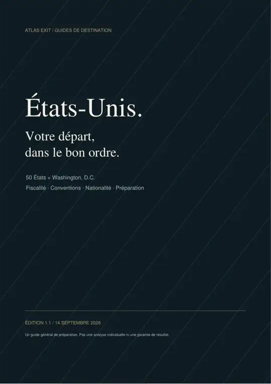

Vos voies pour travailler aux USA.
E-2, O-1A, L-1A et EB-2 NIW : logique, compatibilité et points de blocage.

Un PDF pour choisir votre voie d’installation,
comprendre les impôts et comparer les États.
Paiement sécurisé via Revolut Business. Le PDF complet est envoyé à l’adresse e-mail renseignée après confirmation du paiement.
Voir 5 pages du guide ↗Vous achetez un document PDF.
Pas une formation. Pas un accompagnement.
E-2, O-1A, L-1A et EB-2 NIW : logique, compatibilité et points de blocage.
Revenu, sociétés et taxes de vente : fédéral, État et local sont distingués.
Les 50 États + Washington, D.C., accords franco-américains et feuille de route.
Un guide PDF de 25 pages, en français, comprenant les 50 États et Washington, D.C. Il est lisible sur ordinateur, tablette et téléphone. Ce n’est pas une simulation fiscale personnelle ni un PDF différent pour chaque État.
Cette édition 1.2 est datée du 14 septembre 2026. Les sources et les millésimes sont indiqués dans le guide. Vous achetez une édition, pas un abonnement à des mises à jour permanentes.
Le paiement de 29 € est effectué sur la page sécurisée Revolut Business. Renseignez l’adresse e-mail à laquelle vous souhaitez recevoir le guide. Après confirmation du paiement, le PDF complet est envoyé à cette adresse. Aucun compte Atlas n’est nécessaire.
Sources officielles, édition datée. Lorsque votre situation exige un avis individualisé, Atlas Exit peut coordonner le dossier avec votre avocat, votre fiscaliste ou un professionnel habilité sélectionné pour la mission.
Repères généraux, non personnalisés. Aucun visa ou avantage fiscal garanti.